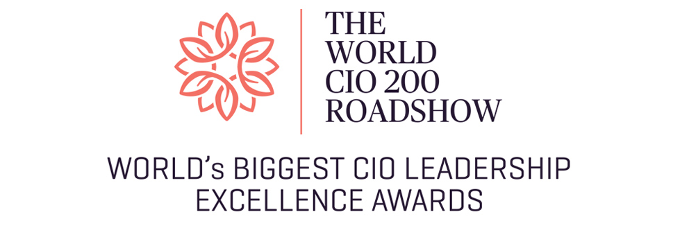

C-LEVELS & MANAGERS GLOBAL SUMMIT 2021 Logo
The logo of The World CIO 200 Summit was decided at the concept meeting in 2010.
Business meets decision here. At The World CIO 200 Roadshow 2021, CIOs from 36+ countries will Challenge the Legacies that were overthrown in the pandemic, Charter the policies for a new digital ecosystem and Change the Policies and governance as the Catalyst. ‘Transformation through Change’ is at the heart of the roadshow this year that would gather global IT decision makers and solution providers in a unique platform this year. The Summit will build roadmaps for strategic decision making and identify yardsticks that are the key drivers of growth in the digital world. While CIOs can pick on sessions to help them fast-track their growth, the solution providers can build their brand, present their solutions and network with 500+ relevant C-level IT decision makers flown in from 36+ countries.
